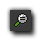

To aid you in your task of creating a good game, GameMaker:Studio provides you with its own editor for editing backgrounds and sprites. Both resources share the same editor so although this page refers to sprites,
the exact same commands are a available for backgrounds too. To call the editor for a sub-image of a sprite, select the sub-image in the sprite editor and choose Edit Image from the Image menu (or double
click on it, or press the "Edit Image" button n the toolbar), and to edit a background, open the background properties window and press the button labelled Edit Background.
The built-in editor is primarily meant for making changes to images, not for creating sprites and backgrounds from scratch, as, although the built-in image editor is pretty powerful, it does not have all the features of full-blown
paint and drawing package. It is great for roughing out some place-holder images but for brand new sprites and graphics you probably want to use a separate paint program, save the images as PNG files, and then load them
into GameMaker:Studio for further work. Note that you can also set an external image editor in the Preferences and so bypass this section all together.
When you start the image editor it will typically looks as follows:
As you can see, the image to be edited takes up the space in the middle of the screen with the editing tools and menus arrayed around it. At the bottom of the screen is the Infobar where you can get basic information about the
state of the editor, with the current mouse x/y position and the percentage of zoom being applied shown at all times. Each of the other sections is dealt with in a little more depth below.
The drop down menus at the top of the screen are almost exactly the same as those found in the Sprite Editor, particularly the
Edit Menu, the Transform Menu, and the Image Menu. The File Menu is similar too,
but has a few less options and they work in different ways :
- New : Creates a new image. This basically wipes the current sub-image ready for you to start from scratch, but it does not change the size.
- Save as PNG file : Saves the current image as a one frame *.png file.
- Previous Image, Next image : Switches sub-images either one frame to the left, or one frame to the right. In this way you can edit multiple sub-images, one after another. Note : This will effectively save any changes to the current sub-image, so use with care as you get no prompt.
- Close saving changes : As it says, this will close the editor and save any changes to the current image.
Like the drop down menus, the toolbar features a number of commands that are covered in the section dealing with the Sprite Editor, however there are a couple of new ones at the
end which we will cover here :
Zoom In
Zoom the image in the editor to see better the individual pixels. The mouse wheel can also be used for zoom too.

Zoom Reset
This resets the zoom to a 1x1 ratio.
Zoom In
Zoom the image in the editor out to see better the overall image. The mouse wheel can also be used for zoom too.
Toggle Pixel Grid
You can click this to toggle the pixel grid on or off (the grid is only visible when you zoom in).
Zoom In
This will toggle on and off the preview panel (situated below the color tools) so you can see the image at actual size even when zoomed in or out.
The right hand side of the window is mostly taken up with the color tools. These are simple to use, yet give you great control over the colors that you can draw with. At the top you have the section labelled Colors with
two boxes labelled "Left" and "Right" which set the color for the corresponding mouse buttons (these boxes also set the colors for certain drawing tools, which we cover in the Drawing Tools section below.
Beneath that you have a basic color picker which covers a very limited range of the most used colors, while beneath that you can find a more advanced color picker for fine-tuning your choice. The Opacity setting controls the
transparency of what is being drawn, with 255 being fully opaque and 0 being fully transparent, while the last control, Color Mode, tells GameMaker:studio to draw and blend the alpha channel, or to overwrite it
using the the current alpha.
The following drawing tools are available for use :
Pencil
With this tool you can paint on the image, using either the left or the right mouse button (the colors can be set independently) and the size of the area being painted can be set by selecting the one of the sizes from the section beneath the draw tools. If you hold <Shift> when starting to paint you only paint horizontal or vertical lines and if you hold the <Ctrl> key, the cursor temporarily turns into the color dropper allowing you to select another color from the image and then continue painting.
Airbrush
With this tool you can "airbrush" paint onto the image. Airbrushing works like the pencil except that the brush is partially transparent at the sides and has a certain texture to it. You can use the left or right mouse button to paint in the different colors you have selected and you can set the size of the brush using the buttons at the bottom. There is also a "hardness" setting for this brush which lets you adjust the transparency of the edges of the lines you paint. As with the pencil tool, if you hold <Shift> when starting to paint you only paint horizontal or vertical lines and if you hold the <Ctrl> key, the cursor temporarily turns into the color dropper allowing you to select another color from the image and then continue painting.
Eraser
With this tool you can erase parts the image. It works a lot like the airbrush but erasing what is below the mouse rather than drawing. How much you erase depends on the the opacity setting, where a value of 255 will erase completely down to 0 which will erase nothing, with all values in between making the image a bit more transparent. You can also set the hardness of the eraser so that it has softer or harder edges and if you hold <Shift> when you start to spray, you only paint horizontal or vertical lines.
Color Picker
With this tool you can use the left or right mouse button to select the color directly beneath as the draw color for that button. Note that the opacity value is also set.
Draw A Line
Use this tool to draw straight lines, with the width of the line set by you in the options below, where you can also choose to have it draw an arrow rather than just a line. By checking Anti-alias the line is drawn with partially transparent pixels on the side to make it appear smoother and if you hold <Shift> when drawing then you can snap to draw horizontal, vertical, or 45° diagonal lines only.
Draw A Polygon
With this tool you can can draw a closed polygon. You start by clicking on the position of the first vertex, then you can either drag to the position of the next vertex or just click there, and then continue to add more points until you have the shape you wish to create. You can end the polygon with the <Esc> key or by selecting another tool from the menu. As with the other tools, you can hold <Shift> to draw horizontal, vertical, or 45° diagonal lines and you can set the width of the line and whether the polygon should be filled or not. By checking Anti-alias the polygon is drawn with partially transparent pixels on the side to make it appear smoother.
Draw A Rectangle
Use this tool to draw a rectangle, or, if you hold <Shift>, a square. If you hold <Ctrl> you can draw the rectangle with the center at the point in the image where you clicked. You can set the width of the outside line and whether the rectangle should be filled or not from the options at the bottom, and by checking Anti-alias the rectangle is drawn with partially transparent pixels on the side to make it appear smoother.
Draw An Ellipse
Use this tool to draw an ellipse, or, if you hold <Shift>, a circle. If you hold <Ctrl> you can draw the ellipse with the center at the point in the image where you clicked. You can set the width of the outside line and whether the ellipse should be filled or not from the options at the bottom, and by checking Anti-alias the ellipse is drawn with partially transparent pixels on the side to make it appear smoother.
Select A Region
With this tool you can can select a rectangular region for copying, curring, or moving. The selection is made by clicking a position and dragging the mouse, which will create a rectangular area bounded by a dotted line. This area can then be clicked on again to "pick it up" and move it around the image with the mouse. If you use the right mouse button, then you will get the same effect, only you will have a copy of the selected region. You can extend the current selection by holding the <Shift> key, you can remove parts by holding the <Ctrl> key, you can delete the contents of the selection with the <Del> key, and you can clear the selection using the <Esc> key.
Select With Magic Want
In this case you make the selection by clicking on a pixel, and all touching pixels with the same color and within the set tolerance will be selected. You can indicate the tolerance with which to select pixels and whether only the color or also the transparency value should match from the options beneath the toolbox. As above, you can extend the current selection by holding the <Shift> key, and you can remove parts by holding the <Ctrl> key. Once you have the selection you can manipulate it as explained above.
Select With Brush
With this tool you make the selection by "brushing" with the mouse on the image. You can set the size of the brush using the controls beneath the toolbox, and the selection can be treated as explained for the above tools.
Add Text
Use this to add text to the image. You start by clicking the image and a pop-up window appears in which you can enter the text (you can use the # symbol to insert a newline), and once you press OK the text is put in the image, with a selection box around it. You can now move the text by clicking and dragging it with the mouse. If you wish to change the text, simply click with the right mouse button in the box. You can also change the font and alignment (left justified, right justified or centered) from the options that are beneath the toolbox.
Flood Fill
Click on a point in the image, with either the left or the right mouse button, and all touching pixels with the same color or within the tolerance setting will be turned into the chosen color. You can set the tolerance with which the color should match from the settings beneath the toolbox, and you can also set whether to only match on the color value or also take the transparency value into account too. Note that when the Color Mode is set to Blend the fill color is blended with the existing one, and to replace it, set the Color Mode to Replace.
Change Color
When you click with either the left or right mouse button using this tool, all pixels in the image with the same color or within the set tolerance will be turned into the new color. You can set the tolerance with which the color should match from the settings beneath the toolbox, and you can also set whether to only match on the color value or also take the transparency value into account too. Note that when the Color Mode is set to Blend the fill color is blended with the existing one, and to replace it, set the Color Mode to Replace.